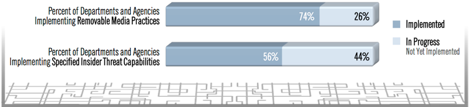
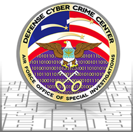
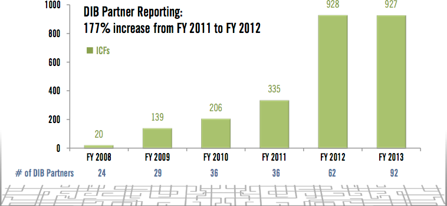

Information Sharing Environment
2013 Annual Report to the Congress
NATIONAL SECURITY THROUGH RESPONSIBLE INFORMATION SHARING
NATIONAL SECURITY THROUGH RESPONSIBLE INFORMATION SHARING
This section describes key achievements over the past year in safeguarding the capabilities that most directly relate to the advancement of information sharing, and specifically to the relevant characteristics of the ISE. It does not attempt to describe all Federal Government security-related activities or achievements.
The need to both protect and share national security and counterterrorism-related information that is stored on and disseminated electronically from Federal Government information systems has become of increasingly critical importance. Sharing and safeguarding information requires that we enforce the controls necessary to protect sensitive and classified information—and the privacy, civil rights, and civil liberties of individuals—while also providing efficient access to mission-critical information in order to enable analysts, operators, and investigators to effectively perform their jobs.
"...strike the proper balance between sharing information with those who need it to keep our country safe and safeguarding it from those who would do us harm."[49]
President Barack Obama
Recent information breaches and disclosures highlight vulnerabilities in the protection of sensitive and classified information. Continued implementation of structural reform and standardized policies, however, will strengthen oversight as well as align security best practices.
The release of Executive Order 13587—Structural Reforms to Improve the Security of Classified Networks and the Responsible Sharing and Safeguarding of Classified Information — in October 2011, and the December 2012 White House release of The National Strategy for Information Sharing and Safeguarding (National Strategy) have provided additional policy guidance for driving improvements in the sharing and safeguarding of classified information.
While departments and agencies made some progress in improving the security of classified networks during the last reporting period, recent events involving insider threats reinforce the need to continue the work begun under EO 13587 in order to make substantive improvements to safeguarding the security of our classified networks.
The Steering Committee has mapped out clear, consensus-based goals and a plan for measuring progress on classified sharing and safeguarding.
In 2013, the Steering Committee will continue to oversee Department and Agency implementation of initial priorities, and will develop and implement plans for addressing emerging vulnerabilities on classified systems. These actions will continue to improve the security of our classified information and systems, and will enhance the support of our critical national security missions, while continuing to promote responsible sharing of classified information.
The following list of findings highlights accomplishments and opportunities for improvement. Further detail is provided in the following pages of this section.
The Administration disseminated in November 2012 a Presidential Memorandum on the National Insider Threat Policy and Minimum Standards for Executive Branch Insider Threat Programs;
DHS expanded its Enhanced Cybersecurity Services (ECS) program, in accordance with EO 13636, Improving Critical Infrastructure Cybersecurity, to better assist critical infrastructure owners and operators in improving protection of their systems from unauthorized access, exploitation, or data exfiltration;
HHS established a Cyber Threat Analysis Unit (CTAU) to develop indicators of compromise, and to detect intrusions or exfiltrations of HHS systems or data at their earliest stages;
The Defense Industrial Base (DIB) Enhanced Cybersecurity Services (DECS) activity was approved as an optional element of the DoD's DIB Cybersecurity and Information Assurance (CS/IA) Program, providing a means for the Federal Government to share classified cybersecurity information with Cleared Defense Contractors (CDC);
DoD is rolling out a program that will allow users of mobile devices working anywhere—from remote battlefields to the Pentagon—to rapidly share classified information and protected data across all components;
The IACP co-hosted a Cyber Threat Roundtable with DHS that brought together more than 20 state and local representatives, and various associations from across the country;
The Comprehensive National Cybersecurity Initiative Five (CNCI-5) led the Federal Cybersecurity Centers[50] in documenting their requirements for government-wide, cybersecurity information sharing.
Continuing efforts by the Steering Committee to advance the priority areas will improve security by strengthening the identification of individuals who are accessing classified systems; limiting access on the basis of the individual's "need-to-know" through technical controls; reducing the opportunity for information to be removed from the secure environment; improving efforts against insider threats; and improving audit capabilities. Considerable work remains in three priority areas: Reduced Anonymity, Access Control, and Enterprise Audit.
As noted last year, cybersecurity can be improved through effectively sharing cyber-vulnerability and intrusion information; and the ISE's information sharing processes can enable cybersecurity information sharing. The work of CNCI-5 and the focus of FEMA's National Level Exercise (NLE) 2012, detailed in this section, highlight the ways in which the sharing of cybersecurity information can make networks more secure.
As in the unclassified environment, the threats to classified systems and information are real, growing, and multidimensional. The classified environment also presents an increasingly complex threat and risk environment resulting from increasing interconnection of systems as well as shared services and their human users.
Our understanding of the threats and associated vulnerabilities for classified systems and information is also improving. The increasing interconnection of classified systems and the flow of information across systems will increase the potential impact of compromises to the security of this information.
The Steering Committee identified five priority areas for departments and agencies to focus their efforts in improving the safeguarding of classified information within their classified networks, with the understanding that these areas will take several years to fully implement.
These priorities include:
Removable Media
Insider Threat Programs
Reduced Anonymity
Access Control
Enterprise Audit
In 2012, the Steering Committee developed clear, consensus-based goal descriptions for each priority, which included identifying initial and final milestones [(initial operating capability [IOC] and final operating capability [FOC], respectively)]. IOC represents a minimum threshold of immediate improvements needed to safeguard classified networks, while FOC represents the end-state capability required for sustained, comprehensive protection of classified networks.
The Steering Committee has requested all departments and agencies that handle classified information to apply milestone definitions to their respective operating environments and to forecast when they will be able to verify attainment of IOC and FOC for each priority.
Each department and agency is starting from a different capability and resource level. Each has projected different timeframes for completion, based on its starting point and resources. Because of this mixed picture, and the need for collective attainment of IOC and FOC goals to manage shared risk, the Steering Committee is actively working with the departments and agencies to accelerate IOC and FOC attainment.[lxvii]
To evaluate individual and collective progress on the priorities, the Steering Committee developed a set of information sharing and safeguarding indicators. The 39 departments and agencies that handle classified information on computer networks each submitted quarterly progress reports on these indicators. Two safeguarding indicator areas—removable media and implementing insider threat capabilities—made progress over the past year based on the quarterly analysis of agency reporting.

Figure 2. Departments and Agencies made some progress in 2012 towards reaching the full operating capability for Removable Media Management and initial operating capability for Implementing Insider Threat Capabilities.
On November 21, 2012, a Presidential Memorandum on the National Insider Threat Policy and Minimum Standards for Executive Branch Insider Threat Programs, developed by the interagency Insider Threat Task Force (ITTF), was disseminated to the heads of all departments and agencies. The Minimum Standards provide departments and agencies with the elements necessary to establish effective insider threat programs. Elements include the capability of gathering, integrating, and centrally analyzing and responding to key threat-related information; monitoring employee use of classified networks; providing the workforce with insider threat awareness training; and protecting the civil liberties and privacy of all personnel.
The ITTF has conducted insider threat forums to introduce and explain the policy and standards to agency leaders.
Although departments and agencies made some progress in 2012 on the first two priorities—Removable Media, and Implementing Insider Threat Capabilities—considerable work remains on these two priorities, as well as on the other three priorities, and on emerging vulnerabilities to classified systems and information. Gaps in reaching IOC and FOC represent continuing vulnerabilities for classified systems and information.
Our continuing efforts in these priority areas will improve security by strengthening the identification of individuals accessing classified systems; limiting access on a basis of the individual’s "need‐to‐know" through technical controls; reducing the opportunity for information to be removed from the secure environment; improving efforts to prevent insider threats; and improving audit capabilities. Additional discussion on gaps and vulnerabilities is included in the classified supplement to this report.
Numerous cross-cutting federal committees are collaborating to establish best practices through the Federal Identity and Access Management and the Joint Continuous Monitoring Group, which will address the other three priorities: Reducing Anonymity, Accessing Control, and Enterprise Auditing.
In 2013, the Steering Committee will continue to oversee the progress of departments and agencies on the first five priorities, identified in 2012. Additionally, the Steering Committee will oversee the commencement of independent assessments, conducted by the Executive Agent for Safeguarding Classified Information on Computer Networks and the Insider Threat Task Force.
A number of other notable safeguarding accomplishments merit recognition. The section below highlights progress in several areas.
During this reporting period, the Steering Committee determined that all agencies operating on Federal Government classified or Secret networks must implement a hardware-based Public-key Infrastructure (PKI) solution to protect their information and networks; remove anonymity; and improve the overall security of federal Secret networks.
DoD, which was already in the process of implementing a PKI Secret Internet Protocol Router Network (SIPRNET) token capability, decided to leverage its existing infrastructure to stand up a common service provider (CSP) capability for all federal agencies, with the exception of those agencies who have their own systems. The Defense Information Systems Agency (DISA) is the operator of DoD PKI, and will be the CSP for the federal agencies.[lxviii]
Further discussion on how PKI solutions are protecting the Top Secret networks is found in the classified supplement to this Report.
The Defense Department continues to work toward transformation into a joint information environment, with defense industry and interagency partners, in support of the President's cybersecurity policy to establish a framework for a voluntary process to share information on cyber attacks and potential security risks to the nation's critical infrastructure.
In May 2012 an information sharing program between DoD and eligible Defense Industrial Base (DIB) companies was formally established with the publication of a federal rule, 32 CFR Part 236, DoD-DIB Voluntary Cybersecurity/Information Assurance (CS/IA) Activities.
This voluntary program enhances and supplements DIB participants' capabilities to safeguard DoD information that resides on, or transits, DIB unclassified information systems.
Under the DIB CS/IA program, DoD provides classified and unclassified cyber-threat information and information assurance best practices to DIB participants. In turn, DIB participants report cyber incidents that may involve DoD information for analysis, the development of coordinated mitigation strategies, and, when needed, cyber intrusion damage assessments of compromised DoD information. The DoD Cyber Crime Center is the DIB CS/IA operational focal point for cyber threat information sharing, DIB incident reporting, and response.
The Defense Department's information priorities include defining the joint information environment architecture for military networks; addressing redundant security infrastructure; and providing command and control to the U.S. military and its mission partners to enable enhanced communications and to promote mission accomplishment.
DC3 is a national cyber center and serves as the operational focal point for the Defense Industrial Base Cybersecurity and Information Assurance (DIB CS/IA) Program.
The DC3 DoD-Defense Industrial Base Collaborative Information Sharing Environment (DCISE) is the hub for cyber analysis and information sharing between Defense Industrial Base (DIB) Partners and U.S. Government (USG) Stakeholders.
Established in 2007 in response to the critical need to improve information sharing, DC3/DCISE is the DoD focal point for the voluntary DIB CS/IA Program which was formed to assist DIB companies in safeguarding DoD unclassified information residing on or transiting DIB unclassified networks.
DC3/DCISE produces actionable threat products—the unclassified Threat Information Product(s) (TIPS) provide indicators that companies can use at their discretion to help defend their corporate networks.

Figure 3. The Incident Collection Form (ICF) is used by DIB partners to submit incident data to DC3 via a secure web site.
When partner companies report events, according to a mutually agreed tiered schema, DC3/DCISE performs analysis and diagnostics and remediation consults, backed up by forensics and malware analysis from DC3 Defense Computer Forensics Laboratory (DCFL).
Beyond simply providing threat products, the partnership is promoting a change in business culture with respect to how partner companies make decisions to protect their key intellectual property.
As the U.S. continues to face enormous challenges in protecting aiding industry in protecting its intellectual property, the processes developed by the DC3/DCISE and the trust relationships established with the DIB partners also help afford the USG a unique and valuable aperture on threats to the Defense Industrial Base.
DoD is rolling out a program that will allow users to employ a range of mobile devices—working anywhere in the world, from remote battlefields to the Pentagon—to rapidly share classified information and protected data.
The goal of the implementation plan is to ensure that mobile devices throughout the Department—as well as their apps, email, other functions, and the wireless networks supporting them—can operate securely even in hostile and remote environments, and can adapt to changing technology and a growing number of users.
Officials have established a phased implementation plan involving vendor competition for development of a system that could serve as a model for large companies that also need to protect the transmission of both open and confidential data.
Safeguarding activities covered under EO 13587 present additional opportunities for building P/CR/CL protections at the programmatic level. The Steering Committee is coordinating with National Security Staff to enhance insider threat and continuous monitoring programs. To support the implementation of these programs, agency legal counsel and P/CR/CL officers have developed guidance for federal agencies to incorporate into their respective agency policy documents and other tools supporting comprehensive P/CR/CL safeguarding programs.
Interlude: Homeland Security and Critical Infrastructure |
|---|
Enhanced Cybersecurity Services (ECS)DHS is the lead agency for coordinating the activities of the Federal Government for the protection of the nation's critical cyber and communications networks and infrastructure. As such, DHS directly supports federal civilian departments and agencies in developing capabilities that will improve their cybersecurity posture in accordance with the Federal Information Security Management Act (FISMA); and works regularly with critical infrastructure owners and operators to strengthen their facilities, respond to threats, and coordinate mitigation efforts against attempted disruptions. To accomplish this, the DHS Enhanced Cybersecurity Services (ECS) program was expanded in February 2013 by EO 13636, Improving Critical Infrastructure Cybersecurity. ECS is a voluntary information sharing program that assists critical infrastructure owners and operators to improve protection of their systems from unauthorized access, exploitation, or data exfiltration. ECS consists of the operational processes and security oversight required to share sensitive and classified cyber threat information with qualified Commercial Service Providers that will enable them to better protect their customers—critical infrastructure entities. ECS augments, but does not replace, these entities' existing cybersecurity capabilities. The ECS information sharing process protects critical infrastructure entities against cyber threats that could otherwise harm their systems.[lxix] In May 2012, the Defense Industrial Base (DIB) Enhanced Cybersecurity Services (DECS) activity was approved as an optional element of the DoD's preexisting DIB Cybersecurity and Information Assurance (CS/IA) Program. DECS provides a means for the Federal Government to share classified cybersecurity information with cleared defense contractors to enable enhanced cybersecurity protections for defense information that resides on or passes through DIB networks and systems. Comprehensive National Cybersecurity Initiative Five (CNCI-5)The Comprehensive National Cybersecurity Initiative Five (CNCI-5) led the federal cybersecurity centers[52] to document their requirements for government-wide, cybersecurity information sharing, while accommodating legal, privacy, and policy considerations. CNCI-5's work focuses on developing requirements for the information sharing architecture (ISA). Currently, the federal cybersecurity centers are developing an implementation plan to accelerate development of the ISA in FY 2014. The concepts are being tested by an Enhanced Shared Situational Awareness (ESSA) Pilot to share spear-phishing threat activity between the United States Computer Emergency Readiness Team (US-CERT) and the NSA Threat Operations Center (NTOC). The pilot validated ESSA technology requirements, as well as highlighting the need for additional inter-departmental work on cybersecurity information sharing policies. Accordingly, CNCI-5 chartered a working group to create a government-wide policy framework. Department of Health and Human Services (HHS) Cyber Threat Analysis UnitHHS is a world leader in the development of health-related research, technical data, and sensitive information impacting global health security. As intelligence trends and cyber intrusions have demonstrated in recent years, sensitive information and intellectual property are targeted not only by foreign intelligence services and foreign actors, but others as well, e.g. academic and research institutions; and private-sector companies. Losses of sensitive economic information and intellectual property to hostile actors or foreign adversaries pose significant national security risks and economic costs. The HHS Office of Security and Strategic Information (OSSI) has established a Cyber Threat Analysis Unit (CTAU), which is building forensic capabilities to address these threats and support the operational mission of the HHS operating divisions that are most targeted for their highly sought-after intellectual property and sensitive technical data and research; divisions like the Centers for Disease Control and Prevention, the Food and Drug Administration, the Centers for Medicare & Medicaid Services, and the National Institutes of Health. CTAU conducts in-depth analysis of IC and law enforcement cyber intelligence, and information on attempted intrusions into HHS networks, and uses trend analysis and forensics to examine threats, conduct predictive analysis, categorize vulnerabilities, and develop indicators of compromise to detect intrusions or exfiltrations at their earliest stages. Within HHS, OSSI is disseminating cyber threat information across the operating divisions to ensure that vulnerabilities are addressed and techniques are readily identified to safeguard networks from intrusions or cyber attacks. State and Local GovernmentsFusion Center Cybersecurity Evaluation Environment The office of the PM-ISE assisted the National Fusion Center Association (NFCA) and the International Association of Chiefs of Police (IACP) by facilitating a Cybersecurity Evaluation Environment Pilot Kick-off event in conjunction with the Northern California Regional Intelligence Center (NCRIC). The event built upon previous discussions (primarily during an August 2012 meeting hosted by the NCRIC, and the December 2012 DHS-IACP Cybersecurity Roundtable), and was held to generate multi-organizational support and urgency for piloting a Fusion Center cyber information sharing capability in 2013. The event focused on:
Participants reached consensus concerning high-level requirements, themes, and elements of a common vision for the future of cybersecurity information sharing. Next steps include piloting Federal Cyber Center information sharing with fusion centers by leveraging current information sharing activities and business processes to enhance:
International Information Safeguarding ActivitiesCybersecurity Information Canada and the United States jointly engaged with the private sector on cybersecurity issues, enhanced real-time information sharing between cyber operation centers, continued cooperation on promoting public awareness of cybersecurity issues, and developed a joint Cybersecurity Action Plan to support and inform both nations' cybersecurity efforts. Canada and the United States continued to strengthen cooperation on international cybersecurity and Internet governance issues, including engagement with the Asia-Pacific Economic Cooperation Telecommunications and Information Working Group, the Organization of American States, the Meridian Process and Conference, the G8, the U.N. Group of Government Experts, and the preparatory process for the World Conference on International Telecommunications. Critical Infrastructure Information Canada and the United States are connected by their critical infrastructure, from bridges and roads to energy infrastructure and cyberspace. The Beyond the Border Action Plan includes measures to enhance the resiliency of our shared critical and cyber infrastructure, and to enable our two countries to rapidly respond to and recover from disasters and emergencies on either side of the border. Canada and the United States continued implementation of the Canada-U.S. Action Plan for Critical Infrastructure, including conducting a Regional Resilience Assessment Program project for the Maine-New Brunswick region. There are plans to conduct joint risk analysis, develop collaborative cross-border analytical products, and share methodologies as well as best practices to enhance critical infrastructure security and resiliency. |
[49] National Strategy for Information Sharing and Safeguarding, December 2012
[50] The Federal Cybersecurity Centers are: the NSA/CSS Threat Operations Center (NTOC); the DHS National Cybersecurity Communications and Integration Center (NCCIC); the U.S.-Cyber Emergency Response Team (US-CERT); the National Cybersecurity Investigative Joint Task Force (NCI-JTF); the Intelligence Community Incident Response Center (IC-IRC); and the USCYBERCOM Joint Operations Center (JOC).
[51] The Joint Information Environment (JIE) facilitates the convergence of DoD's multiple networks into one common and shared global network, and provides enterprise services such as email, Internet/Web access, common software applications and cloud computing. In addition to enhanced network security, JIE objectives include increased operational efficiencies and cost savings through reduced infrastructure and manpower.
[52] The Federal Cybersecurity Centers are: the NSA/CSS Threat Operations Center (NTOC); the DHS National Cybersecurity Communications and Integration Center (NCCIC); the U.S.-Cyber Emergency Response Team (US-CERT); the National Cybersecurity Investigative Joint Task Force (NCI-JTF); the Intelligence Community Incident Response Center (IC-IRC); and the USCYBERCOM Joint Operations Center (JOC).
[lxvii] IRTPA §1016(b)(2)(I)(O), (h)(2)(J)
[lxviii] IRTPA §1016(b)(2)(E)(I)
[lxix] IRTPA §1016(h)(2)(J)